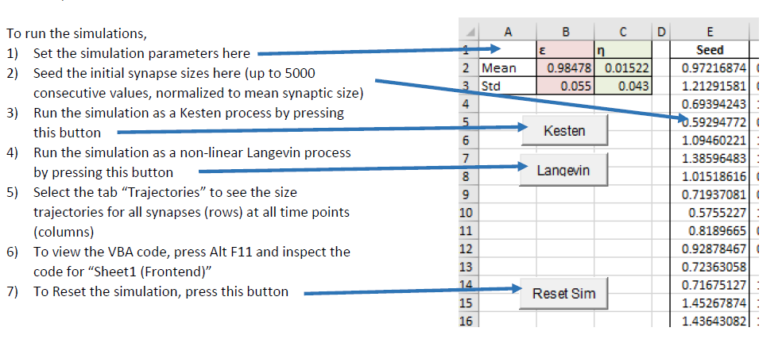

Kesten and Langevin Simulator
Hazan L, Ziv NE (2020) Activity dependent and independent determinants of synaptic size diversity. J Neuroscience
Microsoft Excel files containing code in Visual Basic for Application (VBA) for simulating synaptic size fluctuations and distributions as a Kesten Process or a corresponding non-linear Langevin process as explained in the aforementioned paper.
Four files are provided
Kesten and Langevin Simulator Fig 5 control.xlsm
Kesten and Langevin Simulator Fig 5 silenced.xlsm
Kesten and Langevin Simulator Fig 6 control.xlsm
Kesten and Langevin Simulator Fig 6 silenced.xlsm The VBA code in each pair of files is identical.
Within each pair, the files differ in the parameters used for the simulation (obtained from control or silenced networks) In the first pair, η is set to 1-ε.
In the second pair, η and ε are the values derived from the fits in Fig 6 A and B
All simulations are seeded with the experimentally obtained data for control and silenced networks (1922 and 2032 synapses, respectively)
The simulations in the first pair are set to run for 320 simulation steps, and in the second pair for 40 simulation steps. Apart from this, the VBA code in all files is identical.

Important Notes:
The simulations take 1-2 minutes to run - during which the spreadsheet will be unresponsive.
To run the simulations, Macros must be enabled (File->Options->Trust Center->Trust Center Settings->Macro Settings->Enable All Macros